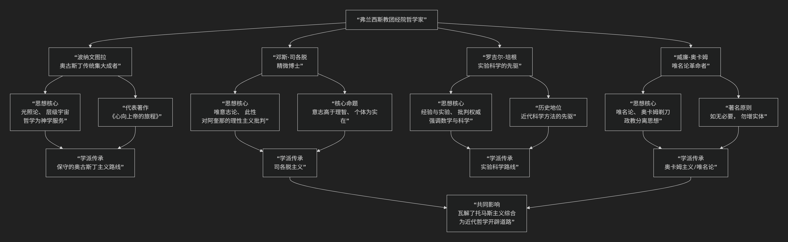

弗兰西斯教团
弗兰西斯教团（方济各会）在中世纪经院哲学史上占据了极其重要的地位，产生了许多极具影响力的哲学家。他们通常与多米尼克修会（道明会）的哲学家（如托马斯·阿奎那）形成有益的竞争与对话，代表了经院哲学内部不同的思想路线。
以下是弗兰西斯教团最著名和最具代表性的几位经院哲学家，他们的核心贡献与思想脉络可以通过下图清晰地展现：

以下，我们将沿此脉络，详细解析这几位哲学家的核心思想与贡献。
一、波纳文图拉 —— 奥古斯丁传统的集大成者
波纳文图拉不仅是神学家，更是方济各会的会长，被誉为“色拉芬博士”。他的哲学是柏拉图-奥古斯丁传统在13世纪的最高峰。
核心思想：光照论与层级宇宙
光照论：他继承了奥古斯丁的思想，认为真正的知识需要上帝的“光照”。理性本身不足以认识真理，必须依靠上帝的启示。心灵需要被上帝之光点亮，才能理解永恒的理念。
层级宇宙：他认为宇宙是一个由上帝流溢出的、具有等级结构的体系，万物都带有上帝的痕迹。哲学和神学的任务就是引导灵魂沿着这个等级向上回溯，回归上帝。
代表作《心向上帝的旅程》：描述了灵魂通过六个阶段（从感知物质世界到沉思上帝三位一体）的神秘上升之路。
与托马斯·阿奎那的对比：当阿奎那致力于调和亚里士多德哲学与基督教神学时，波纳文图拉则坚定地站在奥古斯丁传统中，对亚里士多德哲学保持警惕，认为哲学必须明确地从属于神学。
二、邓斯·司各脱 —— “精微博士”
司各脱是方济各会学派中最具原创性和锐利批判精神的思想家，他的思想直接挑战了托马斯·阿奎那的理性主义体系。
核心思想：唯意志论与“此性”
唯意志论：在上帝论中，司各脱强调上帝的意志高于理智。上帝不是按照一个先在的、必然的理性秩序来创造世界，而是出于其绝对自由和爱的意志。因此，道德律并非必然，而是上帝自由意志的规定。这为神的绝对自由和全能留下了更大空间。
此性：在共相问题上，他提出了精巧的理论。个体的实在性在于其独特的 “此性” ，即使其成为“这一个”的终极原则。共相（普遍概念）并非独立的实体，但它们在事物之中有实在的基础。
批判托马斯主义：他运用精密的逻辑论证，指出阿奎那体系中许多“和谐”之处其实存在无法调和的矛盾，尤其是理性在理解上帝方面的局限性。
三、罗吉尔·培根 —— 实验科学的先驱
培根是一位特立独行的学者，他的思想远远超出了他所在的时代，强调经验观察和科学方法的重要性。
核心思想：经验与实验的优先性
批判权威：他猛烈抨击当时盲目崇拜权威（如亚里士多德）和空洞推理的学风。
强调实验科学：他提出，获得真知有四大障碍：权威、习惯、偏见和虚夸。克服这些障碍必须依靠经验，尤其是通过有目的、受控制的实验。
重视数学与语言学：他认为数学是其他科学的基础，同时强调研究希伯来文和希腊文原文圣经的重要性。
历史地位：他的著作《大著作》是一部科学百科全书，被誉为近代科学方法的先驱。
四、威廉·奥卡姆 —— “唯名论革命者”
奥卡姆是晚期经院哲学最关键的人物，他的思想引发了哲学范式的革命，直接动摇了经院哲学的基础。
核心思想：唯名论与“奥卡姆剃刀”
唯名论：他坚决否认共相（如“人类”、“红色”）的实在性。认为共相仅仅是存在于心灵中的名称或概念，真实存在的只有个别的事物。这彻底颠覆了以托马斯主义为代表的“温和实在论”。
奥卡姆剃刀：即 “如无必要，勿增实体” 的思维经济原则。这把“剃刀”剃掉了经院哲学中大量繁琐、抽象的实体和概念，为一种基于经验和简洁解释的自然科学方法论开辟了道路。
信仰与理性的分离：他认为许多基督教教义（如三位一体）是无法用理性证明的，属于信仰的领域。这为哲学和科学的独立发展创造了空间。
总结对比
哲学家 |
核心称号 |
主要贡献与思想特征 |
历史影响 |
|---|---|---|---|
波纳文图拉 |
色拉芬博士 |
奥古斯丁主义集大成者，强调神秘体验、光照论，哲学服务于神学。 |
守护了神秘主义与柏拉图传统，成为方济各精神的神哲学基石。 |
邓斯·司各脱 |
精微博士 |
批判托马斯主义，强调上帝意志的自由（唯意志论）与个体的实在性（此性）。 |
动摇了理性神学的自信，为唯名论和近代哲学开辟了道路。 |
罗吉尔·培根 |
非凡博士 |
实验科学的先驱，强调经验、观察和数学，批判盲目权威。 |
预告了近代科学革命的精神，是科学方法论的重要先驱。 |
威廉·奥卡姆 |
无敌博士 |
唯名论革命，提出“奥卡姆剃刀”，严格区分信仰与理性。 |
直接导致经院哲学体系的瓦解，对近代哲学、科学和政治思想影响深远。 |
总而言之，弗兰西斯教团的哲学家们为经院哲学带来了意志主义、个体主义、经验倾向和批判精神。与多米尼克修会强调理性、秩序和综合的路线相比，他们更注重自由、个体、体验和简约，这些思想最终成为瓦解经院哲学自身、并催生近代思想的关键力量。